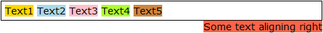

RM8005: IE6 IE7 IE8(Q) 中行内元素后相邻的浮动元素在某些情况下会折行放置在之前行内元素所在行框的底部
标准参考
W3C CSS 2.1 规范文档里对于浮动元素与非浮动行内元素相邻时的情况有如下解释。以下是关键段落：
A floated box is shifted to the left or right until its outer edge touches the containing block edge or the outer edge of another float. If there's a line box, the top of the floated box is aligned with the top of the current line box.
由上面的描述可以得到以下结论：如果一个元素浮动前是一个行内元素，则该元素浮动后，顶部应与其之前所在的行框顶部对齐。
关于浮动的详细信息，请参考 CSS 2.1 规范 9.5 Floats 中的内容。
问题描述
IE6 IE7 IE8(Q) 下，若浮动元素之前存在兄弟行内非浮动元素，IE 会将浮动元素所在的“当前行”认为是其前边的兄弟行内元素所产生的匿名框的底边，导致该浮动元素折行。
造成的影响
如果我们仅仅在 IE6 IE7 中编写页面并进行测试，当看到上面对测试代码的截图中的效果，在不清楚导致右浮动元素换行的原因是 IE6 IE7 对于同一行内浮动元素与非浮动行内元素的处理存在 Bug 的情况时，有可能会为右浮动元素设置一个负值 'margin-top'，这样虽然在 IE6 IE7 中能保证布局的正常，但在其他浏览器下就会出现异常。
受影响的浏览器
| IE6 IE7 IE8(Q) |
|---|
问题分析
分析以下代码：
<div style="border:1px solid black; font:14px Verdana; padding:5px;"> <span style="background:gold;">Text1</span> <span style="background:lightblue;">Text2</span> <span style="background:pink;">Text3</span> <span style="background:greenyellow;">Text4</span> <span style="background:peru;">Text5</span> <span style="background:tomato; float:right;">Some text aligning right</span> </div>
这段代码在各浏览器中的效果如下：
| IE6 IE7 IE8(Q) | IE8(S) Firefox Chrome Safari Opera |
|---|---|
|  |  |
可见，
- 在 IE6 IE7 IE8(Q) 中，浮动的 SPAN 折行浮动在新的一行上，同时位置也脱离了其父容器；
- 在其他浏览器中，则遵照 CSS 2.1 规范对浮动的定义，将浮动元素显示在浮动框另一边的第一个可用行上。
在 IE6 IE7 下，测试代码没有达到我们预计的效果，右浮动的 SPAN 折行浮动在新的一行上，同时位置也脱离了其父容器。 现在看看 Text1、 Text2……Text5 所在的 SPAN 元素作为浮动框之前当前行的内容，应该显示在浮动框另一边的第一个可用行上。 右浮动的 SPAN 紧贴在其父容器的右边界，其左侧的空白区域只要有足够的空间容纳这 5 个非浮动的 SPAN 元素，它们就应该保持与右浮动的 SPAN 元素位于同一行上。 这里 IE6 IE7 以及所有版本 IE 的混杂模式的处理均是错误的。
此问题的触发条件:
- 同一个父容器内有多个行内元素；
- 某些为非浮动元素，某些为浮动元素（可以是左浮动或右浮动）；
- 浮动的子元素不都是位于非浮动的子元素之前。
解决方案
依具体情况可以使用三种方法：使用绝对定位模拟右浮动、使用 IE hack 专门在IE6 IE7 中设置负的上外边距、将右浮动的 SPAN 元素调整到所有非浮动 SPAN 元素之前。
- 使用绝对定位（position:absolute）模拟右浮动（float:right）。 为了避免 IE6 IE7 的这个 BUG，可以不使用右浮动，而是用绝对定位及右偏移（right:XXXpx），如为右浮动元素设置 'position:absolute' 及 'right:3px' 替代 'float:right'，但这样做的代价是必须为父容器 DIV 元素设置 'postion:relative'，这么做仍然会破坏原文档结构。所以我们并不推荐此方法。
- 使用 IE hack 专门在IE6 IE7 中设置负的上外边距（margin-top:-XXXpx）。 既然此 Bug 为IE6 IE7 专有，则只需要在 IE6 IE7 下为右浮动元素设置一个负的上外边距即可，其他浏览器保持原样式。所以可以考虑使用只有 IE6 IE7支持的 hack 方式：在 CSS 特性前加星号 '*'。如 *margin:-23px 5px 0 0，这样既可消除 IE6 IE7 中的 Bug，但是这么做是利用了浏览器的 Bug，并没有消除 Bug。在能有个更好的解决方法的时候，不推荐使用 CSS hack 来解决问题。
- 调整SPAN元素的位置。
通过上面总结的 Bug 触发条件，我们可以考虑直接调整父容器中 SPAN 子元素的位置来回避 IE6 IE7 中此 Bug，即将右浮动的 SPAN 元素调整到所有非浮动 SPAN 元素之前。
<div style="border:1px solid black; font:14px Verdana; padding:5px;"> <span style="background:tomato; float:right;">Some text aligning right</span> <span style="background:gold;">Text1</span> <span style="background:lightblue;">Text2</span> <span style="background:pink;">Text3</span> <span style="background:greenyellow;">Text4</span> <span style="background:peru;">Text5</span> </div>
参见
知识库
相关问题
测试环境
| 操作系统版本: | Windows 7 Ultimate build 7600 |
|---|---|
| 浏览器版本: | IE6 IE7 IE8 Firefox 3.6 Chrome 5.0.342.2 dev Safari 4.0.4 Opera 10.50 |
| 测试页面: | float_after_inline.html |
| 本文更新时间: | 2010-07-21 |
关键字
float bug inline 行内 浮动 换行